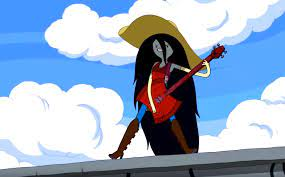

Apesar de sua primeira aparição demonstrar uma natureza antagonista, com o passar da série a personagem se torna uma amiga próxima de Finn e Jake, e vai evoluindo sua personalidade e relacionamentos. Ao contrário dos vampiros convencionais, ela não precisa de sangue para viver, apenas se alimentando da cor vermelha. Ela é uma ávida musicista e cantora. Marceline tem a pele acinzentada clara, com orelhas pontudas, que foram herdadas do seu pai, e cabelos pretos azulados longos, tão longos que chegam a passar seus pés. Ela também possui duas marcas no pescoço, que são as marcas da mordida feita pelo Rei que a transformou em uma vampira.